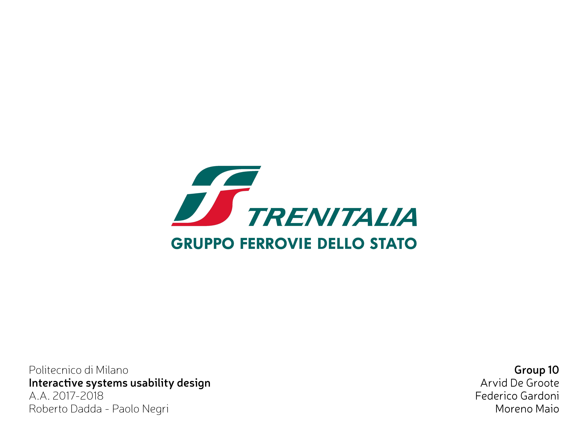
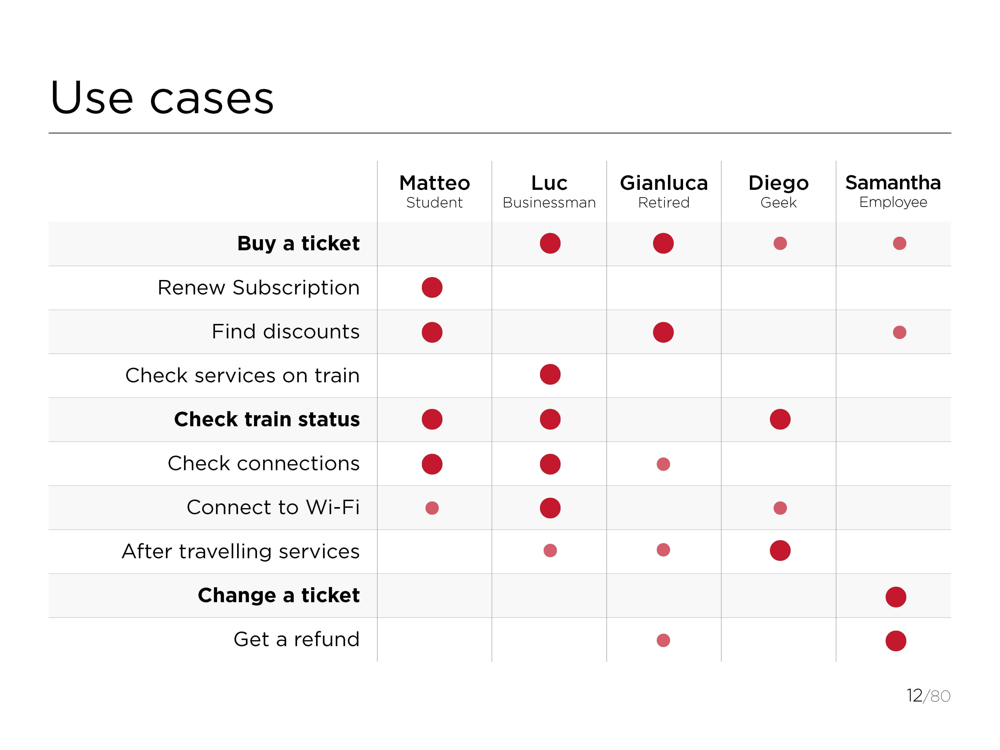
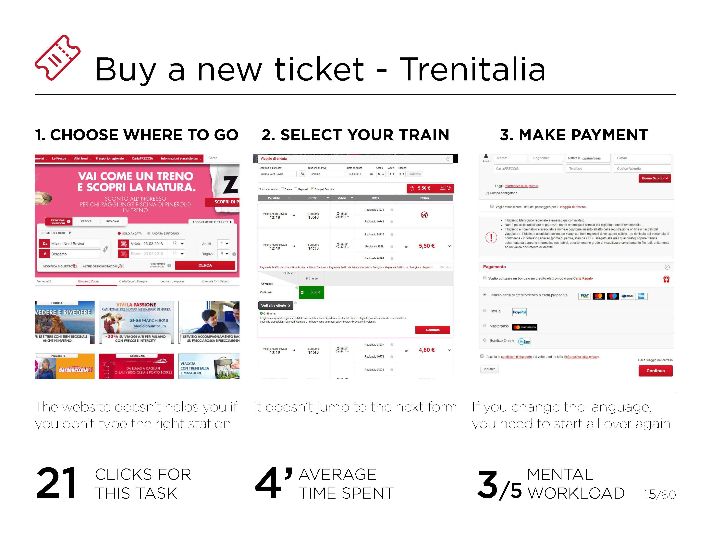
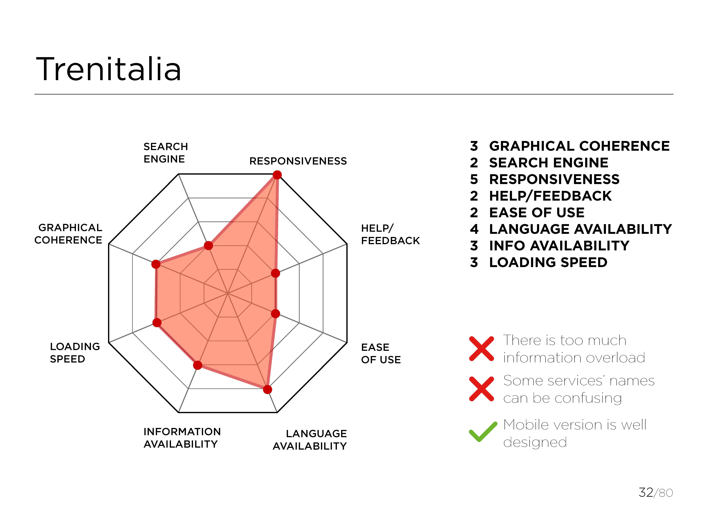
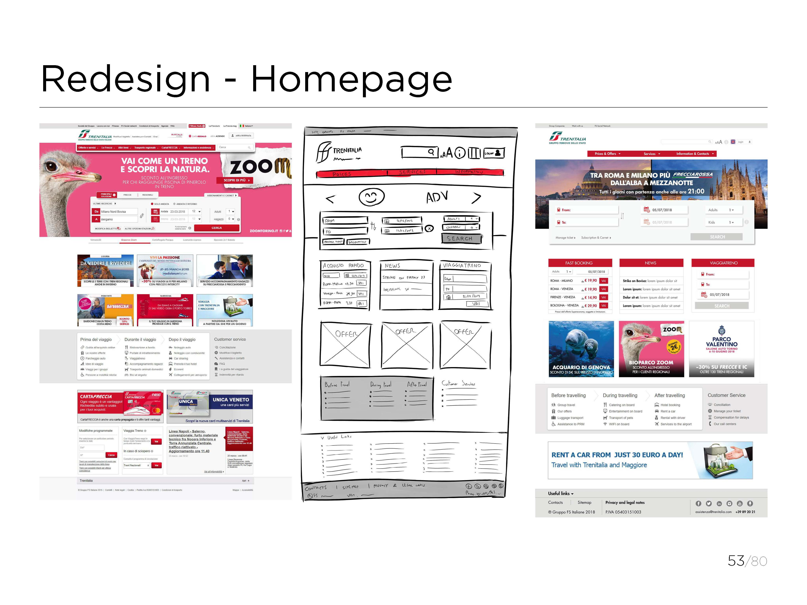
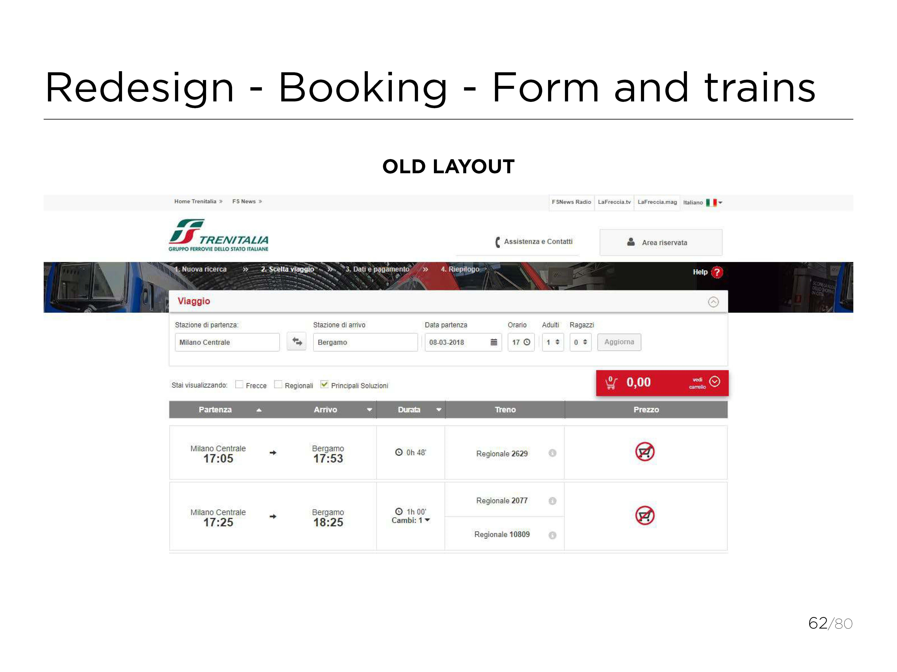
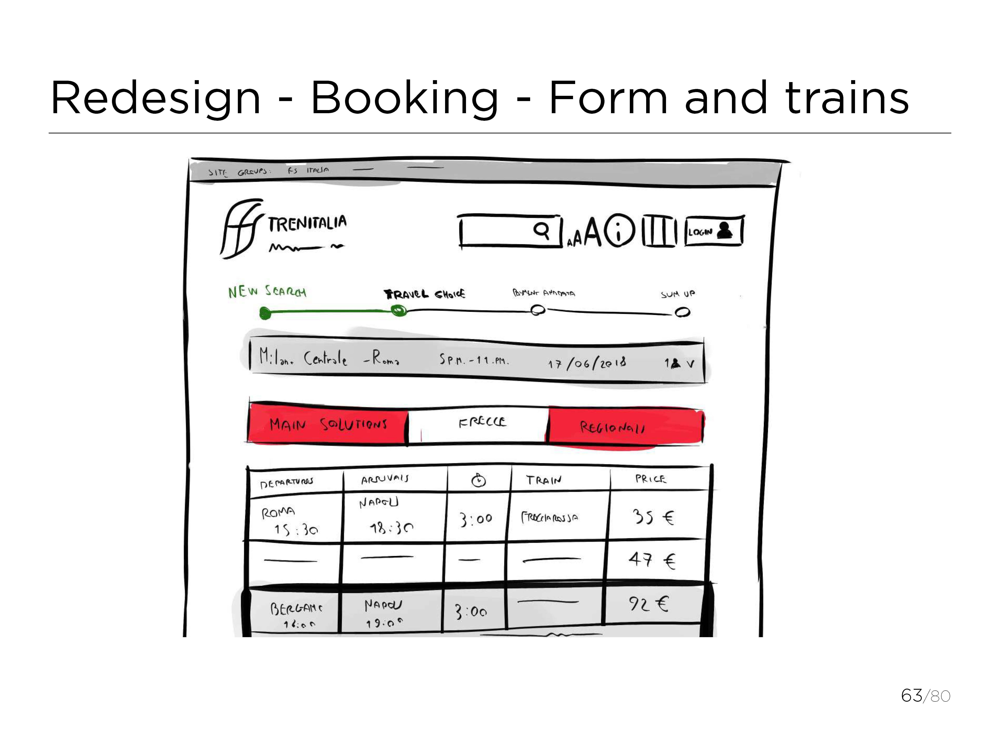
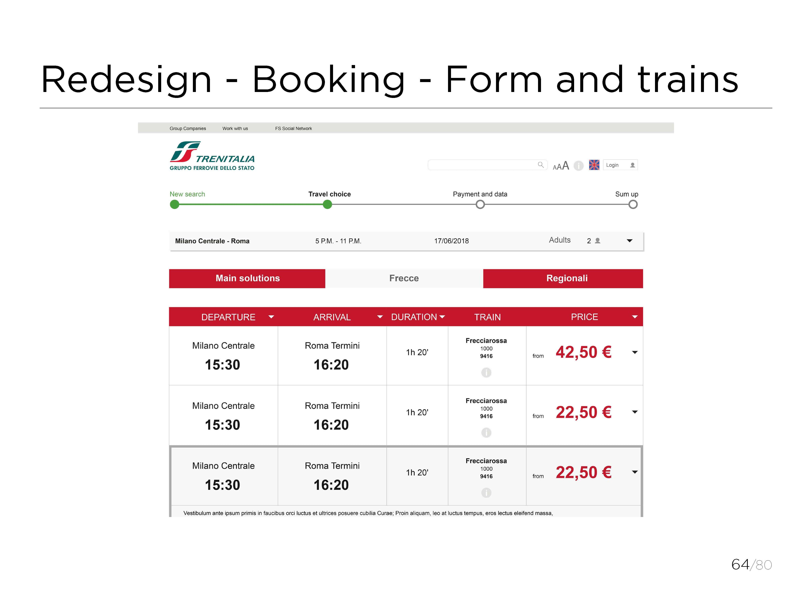
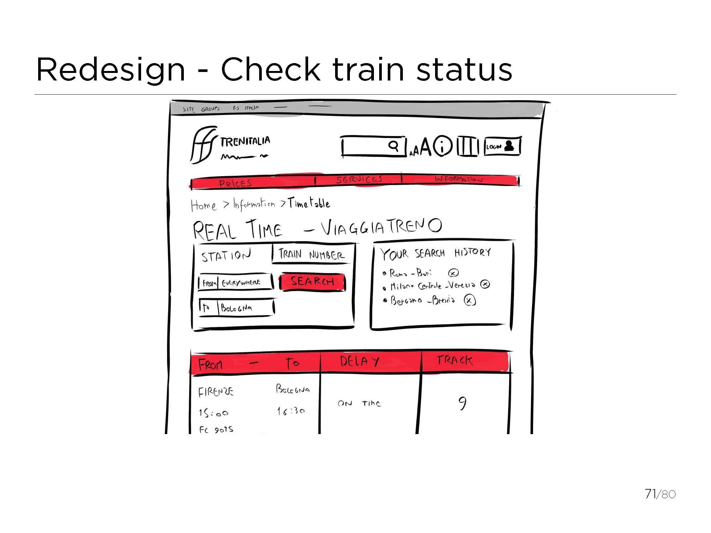
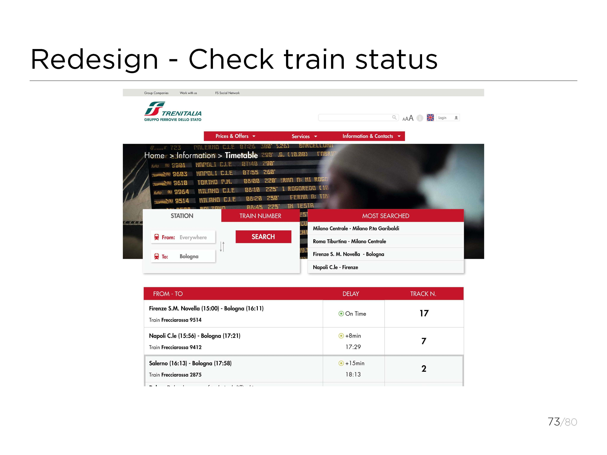

Redesign dell’interfaccia del sito web di Trenitalia per garantire una maggiore usabilità. Progetto realizzato assieme a Arvid De Groote e Federico Gardoni per il corso di Interactive System Usability Design. Partendo dall'analisi dell'usabilità del sito attuale sono stati corretti i maggiori problemi e proposte soluzioni di navigazione più efficaci.
         